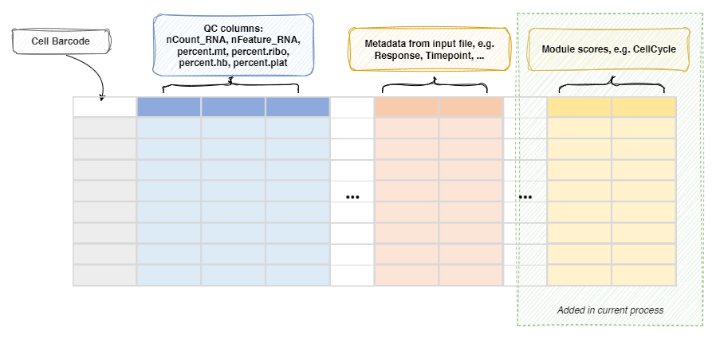

ModuleScoreCalculator¶
Calculate the module scores for each cell
The module scores are calculated by
biopipen.utils::RunModuleScoring()
with the scoring method specified by env.defaults.method (or per module
by method in the module dict):
seurat:Seurat::AddModuleScore(), the default. The module scores are calculated as the average expression levels of each program on single cell level, subtracted by the aggregated expression of control feature sets. All analyzed features are binned based on averaged expression, and the control features are randomly selected from each bin. (Tirosh I, et al. 2016. Dissecting the multicellular ecosystem of metastatic melanoma by single-cell RNA-seq.
Science 352(6282):189-196.
https://www.science.org/doi/10.1126/science.aad0501)ucell:UCell::AddModuleScore_UCell()(Andreatta M, Carmona SJ. 2021. UCell: Robust and scalable single-cell gene signature scoring. Comput Struct Biotechnol J 19:3796-3798.
https://doi.org/10.1016/j.csbj.2021.06.043). Missing genes are imputed with expression 0 (with a warning).aucell:AUCell::AUCell_calcAUC()(Aibar S, et al. 2017. SCENIC: single-cell regulatory network inference and clustering. Nat Methods 14:1083-1086.
https://doi.org/10.1038/nmeth.4463)ssgsea:GSVA::gsva()withmethod = "ssgsea"(Barbie DA, et al. 2009. Systematic RNA interference reveals that oncogenic KRAS-driven cancers require TBK1.
Nature 462:108-112. https://doi.org/10.1038/nature08460)jasmine: (Noureen N, et al. 2022. Integrated analysis of telomerase enzymatic activity unravels an association with cancer stemness and proliferation. eLife 11:e71994. https://doi.org/10.7554/eLife.71994)scse: (Pont F, et al. 2019. Single-cell signature explorer for personalized transcriptomics studies and drug discovery. Nucleic Acids Res 47(19):e90. https://doi.org/10.1093/nar/gkz601)scps: (the scPS benchmarking study:
https://academic.oup.com/nargab/article/6/3/lqae124/7770961)
Scores from different methods are not comparable with each other — only
the column names are consistent.
Input¶
srtobj: The seurat object loaded bySeuratClustering
Output¶
rdsfile: Default:{{in.srtobj | stem}}.qs.
The seurat object with module scores added to the metadata.
Environment Variables¶
defaults(ns): The default parameters formodules.method(choice): Default:seurat.
The scoring method to use, one ofseurat,ucell,aucell,ssgsea,jasmine,scseorscps.
Can be overridden per module.features: The features (genes) to calculate the scores.
A comma-separated string of genes, e.g.
"HAVCR2,ENTPD1,LAYN,LAG3", yields one score column named by the module key. A list of gene vectors, e.g.
["HAVCR2","ENTPD1"], yields one column per element, named{key}1,{key}2, ... if unnamed, or{key}_{name}if named. You can also specifycc.genes,cc.genes.updated.2019orcc.genes.mouse(or usekind: "cc", withfeaturesdefaulting tocc.genes) to calculate cell cycle scores. Three columns will be added to the metadata:{key}_S.Score,{key}_G2M.Scoreand{key}_Phase. This works for all methods. Use one of the reserved no-prefix keys ("_","-","*"or"#") as the module key to keep the plainS.Score,G2M.ScoreandPhasenames. For diffusion map modules (kind: "dm"), this is the number of components to keep (default 2).nbin(type=int): Default:24.
Number of bins of aggregate expression levels for all analyzed features. Only for theseuratmethod.ctrl(type=int): Default:100.
Number of control features selected from the same bin per analyzed feature. Only for theseuratmethod.k(flag): Default:False.
Use feature clusters returned fromDoKMeans.
Only for theseuratmethod.assay: The assay to use (for tools that accept it).seed(type=int): Default:8525.
Set a random seed. Only for theseuratmethod.search(flag): Default:False.
Search for symbol synonyms for features that don't match features in object? Only for theseuratmethod.<more>: Other parameters, passed to the underlying tool of themethod. Forseurat, they go toSeurat::AddModuleScore()orSeurat::CellCycleScoring()(see https://satijalab.org/seurat/reference/addmodulescore and https://satijalab.org/seurat/reference/cellcyclescoring).
Forucell:maxRank,w_negandslot(default"counts", notlayer). Foraucell:aucMaxRank,plotStats. Forssgsea:kcdf,verbose,min.sz,max.sz,tau, etc. Forscse/scps:layer(default"data").scpsuses the bundled scPS implementation, which runs PCA on thescale.dataof the object, so the signature genes must be scaled first (ScaleData(features = ...)orSCTransform); it also requires theGSEABasepackage. For diffmap modules (kind: "dm"):n_pcs(use PCA embeddings instead of assay data) and other arguments passed todestiny::DiffusionMap().
Theaggandkeepparameters from old versions are removed and ignored.
ncores(type=int): Default:1.
The number of cores to use for reading and writing the seurat object.-
modules(type=json): Default:{}.
The modules to calculate the scores.
Keys are the names of the expression programs and values are the dicts inherited fromenv.defaults.
Here are some examples -{ "CellCycleMouse": {"features": "cc.genes.mouse"}, "CellCycle": {"kind": "cc", "features": "cc.genes.updated.2019"}, "TcellState": { "features": { "Exhaustion": ["HAVCR2", "ENTPD1", "LAYN", "LAG3"], "Activation": ["IFNG"] }, "method": "ucell", "maxRank": 500 }, "Proliferation": {"features": "STMN1,TUBB"}, "DC": {"kind": "dm"} }For
CellCycle, the columnsCellCycle_S.Score,CellCycle_G2M.ScoreandCellCycle_Phasewill be added to the metadata.For
TcellState, the columnsTcellState_ExhaustionandTcellState_Activationwill be added to the metadata, one for each program in the namedfeatureslist (the list values are gene vectors, not comma-separated strings).For
DC, a diffusion map will be calculated withdestiny(regardless ofmethod), and the first 2 components will be added as theDCreduction as well as theDC_1andDC_2columns to the metadata.dmis a shortcut fordiffmap/diffusion_map.
You can later plot the diffusion map by usingreduction = "DC"inenv.dimplotsinSeuratClusterStats.
This requiresSingleCellExperimentanddestinyR packages.
-post_mutaters(type=json): Default:{}.
The mutaters to mutate the metadata after calculating the module scores.
The mutaters will be applied in the order specified.
This is useful when you want to create new scores based on the calculated module scores.
Metadata¶
The metadata of the Seurat object will be updated with the module scores:
